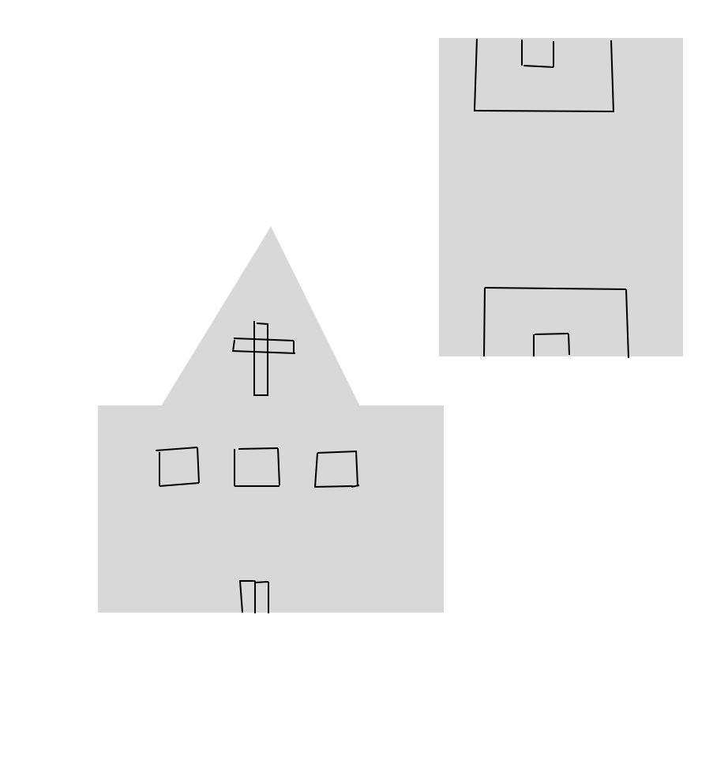

Multimédia
Dois lugares bastante conhecidos e acarenhados pela populaçao de glasgow sao o estadio dos Rangers chamado Ibrox Stadium e a Catedral Santa Maria de Glasgow
One Cigarette
Edwin Morgan
No smoke without you, my fire.
After you left,
your cigarette glowed on in my ashtray
and sent up a long thread of such quiet grey
I smiled to wonder who would believe its signal
of so much love. One cigarette
in the non-smoker's tray.
As the last spire
trembles up, a sudden draught
blows it winding into my face.
Is it smell, is it taste?
You are here again, and I am drunk on your tobacco lips.
Out with the light.
Let the smoke lie back in the dark.
Till I hear the very ash
sigh down among the flowers of brass
I'll breathe, and long past midnight, your last kiss.

A catedral e o famoso estadio IBROX